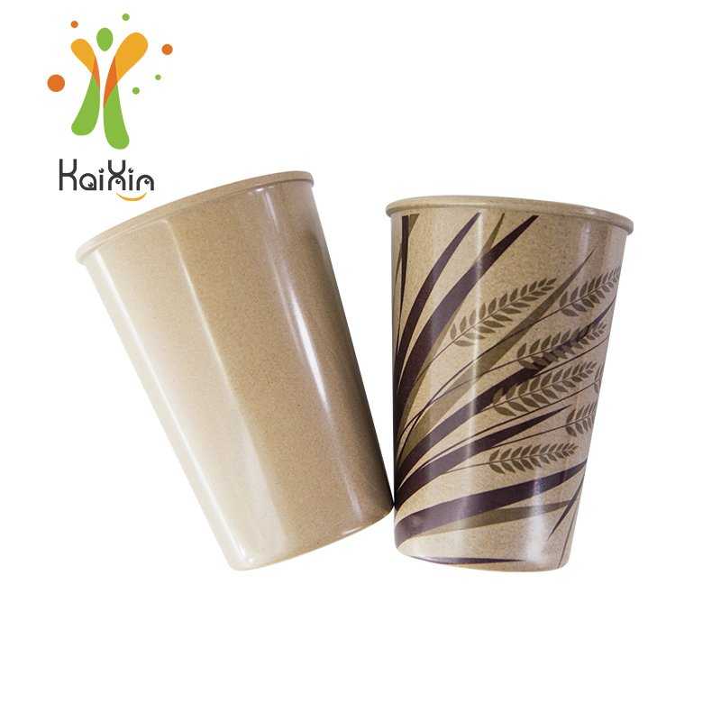
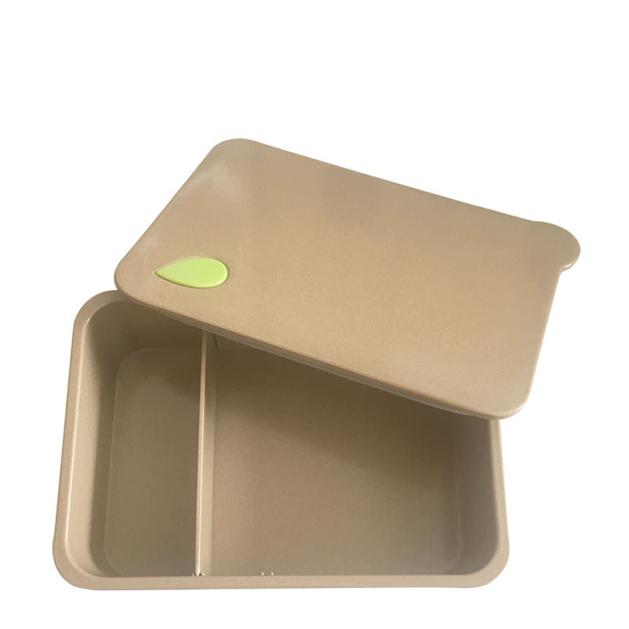

Reusable Tableware in Germany: The Mehrweg Rules Cafés, Bakeries and Importers Should Know
Germany is Europe's largest food-service market — and it is also the country where "reusable" stopped being a preference and became a legal obligation. Since 2023, cafés, bakeries, restaurants and canteens selling takeaway food and drinks have had to offer a reusable alternative alongside disposables, and since 2024 single-use plastic items carry a per-kilogram levy paid by the manufacturers and importers who first place them on the German market. If you sell tableware into Germany — or you are an importer, distributor or chain deciding what to stock there — the word to know is Mehrweg (reusable). Here is what the rules actually say, who they affect, and what a sensible reusable tableware program looks like.

The reusable rice husk cup — the product at the center of Germany's takeaway-cup debate.
The 2023 Rule: Reusable Must Sit Next to Disposable
Sections 33 and 34 of the German Packaging Act (Verpackungsgesetz, or VerpackG) took effect on 1 January 2023. In plain terms: any business that sells food or drinks to go — restaurants, cafés, bakeries, snack stands, canteens, delivery services — has to offer a reusable alternative whenever it offers disposable plastic food containers, and for every disposable drink cup regardless of material. That last point catches a lot of operators off guard: a paper cup is not an escape route, because the obligation covers all single-use cups, plastic or not.
The law also sets the conditions. The reusable option must not cost more than the disposable one, and no discounts or benefits may favor the disposable version. Customers must be told about the choice through clearly visible signage. Businesses that hand out reusables have to take them back, and hygiene rules govern how dirty items are collected, washed and reissued. Together these requirements turned "do you want that in a reusable cup?" from a marketing gesture into a compliance question — which is exactly why German operators now treat reusable tableware as core equipment rather than an optional upgrade.
The Small-Business Exemption — and Why It Still Matters to Suppliers
There is one exemption, and it is narrow. Businesses with a sales area of up to 80 square meters and no more than five employees do not have to run their own reusable offering. But they are not off the hook entirely: they must fill containers that customers bring in, on request, and they must post signage saying they do. The exemption removes the obligation, not the trend — a neighborhood bakery may legally keep handing out paper cups, yet a growing share of German customers now carry their own cup, and the ones that do not increasingly expect a reusable choice anyway. For a distributor, that means the addressable market is not just the big chains. It is also the thousands of small operators who volunteer for reusables because their customers ask for them.
The 2024 Levy: Single-Use Plastic Now Has a Price Tag
The second layer arrived on 1 January 2024. Under the Single-Use Plastics Fund Act (Einwegkunststofffondsgesetz, EWKFondsG), manufacturers and importers who first place certain single-use plastic products on the German market pay an annual levy administered through the Federal Environment Agency's DIVID platform. The rates are set per kilogram: around €0.18 for plastic food containers and about €1.24 for beverage cups, with higher rates for items like lightweight carrier bags. Companies that fail to register face fines of up to €100,000, and the reporting obligations come with documentation requirements that small importers often underestimate.
Two practical takeaways follow. First, the levy is charged on single-use products — reusable tableware sits outside this system entirely, which quietly shifts the cost math further in reusables' favor every year. Second, for a non-German manufacturer exporting packaged goods into Germany, the domestic importer usually carries the producer obligations, so German buyers are increasingly asking suppliers hard questions about materials, weights and documentation before they commit to a container. A supplier who can answer those questions quickly is easier to buy from; one who cannot becomes the importer's paperwork problem.
Why This Points Straight at Reusable Tableware
Compostable disposables were the first reaction to plastic bans across Europe, and they solve one problem — the material — while leaving the other untouched: a busy bakery still produces a bag of waste every hour, and composting infrastructure varies widely from municipality to municipality. Germany's rules are built on a different logic. They do not reward a better disposable; they require a different system — items that come back, get washed, and return to service.
That is where durable plant fiber tableware fits. Rice husk tableware starts as an agricultural byproduct — the hull left after rice milling — ground and molded under heat and pressure into a dense composite. It handles boiling water and hot espresso drinks, tolerates temperatures from −30°C to 120°C, and survives repeated daily washing — by hand or a standard dishwasher cycle — for years of service. No BPA, no plastic. For German cafés, bakeries with eat-in counters, hotel breakfast rooms and canteens, it answers the exact question the law asks: what do you serve on when the item comes back to the counter a thousand times?
What Importers and Distributors Should Stock for Germany
The Mehrweg rules map cleanly onto a product list. Cups and tumblers are the headline category — the drink-cup obligation touches nearly every operator in the country, and it is where the levy bites hardest. Bowls and plates serve the food-container side for dine-in sections, hotel breakfast service and canteens. Serving trays and compartment trays are the workhorses of bakery counters and school or campus dining. And for operators running reusable takeaway box programs, sturdy containers with tight lids are the natural companion product. Our rice husk coffee cups support molded or printed logos and Pantone color matching, which matters in Germany where many operators brand their reusables to signal the program to customers; the rice husk lunch box and rice husk bowls round out the food side.

Documentation is the other half of the offer. German buyers are detail-oriented, and the compliance environment makes them more so. Before quoting, prepare the food-contact migration test reports for each SKU, the LFGB food-contact statement for the German market, and material declarations showing what the product does and does not contain. We ship SGS food-contact reports with every quotation — not because marketing demands it, but because importers need those papers to answer their own customers. If you are building a first program, our container loading and MOQ guide shows how to structure a pilot order without overcommitting capital.
A Sensible Rollout for a German Program
Operators we see succeeding in Germany tend to follow the same sequence. They start with the item the law touches most visibly — the takeaway or dine-in cup — and run it through a month of real service in their own wash setup. They brand it once the material proves itself, so the reusable item doubles as an advertisement for the program. Only then do they extend to plates, bowls and trays. Importers can mirror the same logic at container scale: pilot with one or two SKUs, confirm durability and documentation with a reference customer, then expand the range. Reusables also pair well with the seasonal rhythm of German hospitality — outdoor café service in summer, Christmas markets where reusable cups have already become the norm — so timing a first delivery ahead of the spring opening is a common pattern.
Quick Checklist: Preparing a Mehrweg Tableware Order
Start with cups or bowls — the categories the 2023 rules touch most directly
Test samples through one month of real service in your own wash setup
Collect food-contact migration reports and the LFGB statement per SKU before quoting
Confirm branding: molded logo, printed logo, or Pantone color match
Check stock vs. custom MOQ tiers in writing before committing
Plan the delivery ahead of the season — spring café openings and Christmas market prep both spike demand
Frequently Asked Questions
Does the reusable-offer rule really apply to small bakeries and kiosks?
Businesses with a sales area of up to 80 square meters and no more than five employees are exempt from offering their own reusable system — but they must fill customer-brought containers on request and display signage about it. In practice, many small operators still choose reusables voluntarily, because customer expectations have moved faster than the exemption.
Which documents should a German importer ask a tableware supplier for?
Ask any supplier for the food-contact migration test reports for the exact SKUs you are buying, an LFGB food-contact statement for the German market, and material declarations. Reputable manufacturers provide these with the quotation, not after it. If a supplier hesitates on documentation, that hesitation will eventually become your compliance problem under German law.
Can rice husk tableware handle bakery display counters and hot drinks?
Yes — quality plant fiber tableware is built for hot beverages and daily food service, tolerating temperatures from −30°C to 120°C, and it tolerates repeated washing for years. For display-case use, check with your supplier about continuous contact with heated surfaces; for counter service, coffee machines and ovens at normal distances pose no issue.
Note: this article is general market information, not legal advice. Rules and rates change; confirm current obligations with your legal or compliance adviser and the relevant German authorities.
Building a Mehrweg tableware program for Germany?
Tell us your market, target SKUs and quantities. We'll reply with a tailored quotation, our SGS food-contact reports and LFGB statement, and a sample proposal — custom logo and color options included from our 5,000 m² facility.
Send InquiryRelated reading
Three pages worth opening next, depending on what you are deciding.
- Plastic-free hotel breakfast in Europe — how EU packaging rules reshape the morning buffet, the closest cousin to Germany's Mehrweg logic.
- The zero waste kitchen in Europe — the consumer-side movement your German retail customers are reading.
- Container loading and MOQ guide — how to size a first order without tying up cash.
Published by Kaixin Eco Team · Shenyang Kaixin Technology Co., Ltd. — eco-friendly rice husk (plant fiber) dinnerware manufacturer since 2016, shipping to 40+ countries with full OEM/ODM support. Going deeper: see the Kaixin eco tableware homepage, browse the full rice husk product range, or start from what rice husk tableware actually is.